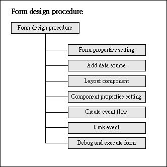
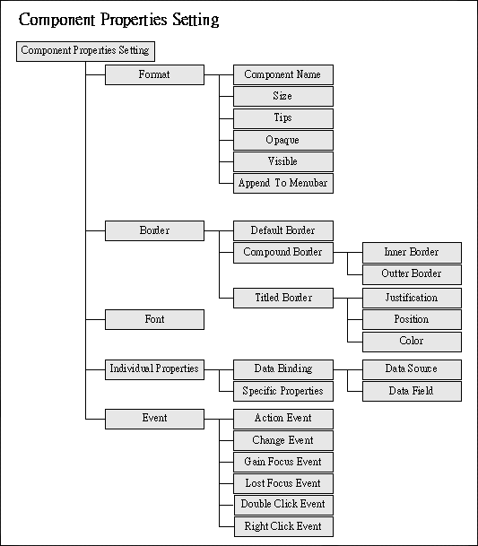
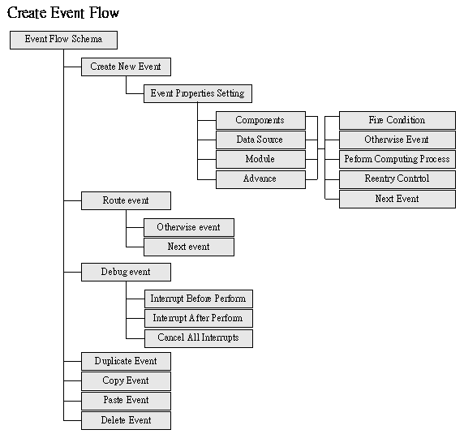

|

3.2 視窗設計 (form design)
視窗畫面 (form)
是分散式應用程式系統的基本模組，在視窗畫面設計完成後，設計師只要按系統流程及使用程序，提供使用者開啟、關閉相關視窗的介面，即可完成應用系統設計。在開始進入視窗設計前，設計師必需先充分了解物件導向
(OOP) 及事件驅動 (event drive) 的概念與運用。jLIVE Builder™ 中視窗
(form)
是一個物件 (object) ，是形成應用程式的基本模組，也是 jLIVE Builder™
系統中，可以在不同應用程式參照 (reference) 重用 (reuse)
的物件。設計師可以視窗設計平台操作的進入視窗設計模式，開始設計視窗畫面。
視窗設計程序 (form design
procedure)
- 視窗屬性設定 (form properties
setting)
- 加入資料來源 (add data source)
- 佈建元件 (layout components)
- 元件屬性設定 (component
properties setting)
- 建立事件流程 (create event
flow)
- 連結事件 (link event)
- 視窗除錯及測試執行 (debug and
execute form)

視窗屬設定性 (form properties setting)
按選【視窗屬性設定】按鍵，在視窗屬性設定頁上按需求擇定視窗呈現的樣式、作業流程及啟動事件。

設計提示 (design tips)
- 視窗標題 (form title)
設計師可以使用運算式 SetTitle("title")
與 FormName()，存取視窗標題。
- 視窗位置及大小 (Form position
and size)
執行期 (Runtime) ，使用運算式 FormPos(left,
top) 及 FormSize(width, height)
可以動態改變視窗位置及大小。視窗開啟位置，使用【視窗開啟】事件
(Open form)，視窗顯示於屬性設定的位置；使用運算式
OpenForm("formname", "pos")
視窗可以開啟在相對於啟動事件的元件位置或窗螢幕中央。參閱
OpenForm 運算式。
- 視窗類別 (Form type)
視窗類別分為主視窗 (main)、對話方塊
(dialog)、內部視窗 (internal frame)、隱藏程序
(process)。主視窗 (main)
類別的視窗，以瀏覽器 (browser)
執行的應用程式，將貼嵌於瀏覽器 (browser)
頁面中；以獨立執行(stand alone)
的應用程式執行時，將貼嵌於主視窗框架 (main frame) 中。對話方塊
(dialog) 類別的視窗，將會以獨立的視窗
(window) 呈現於瀏覽器 (browser) 或主視窗框架 (main frame) 外。內部視窗
(internal frame)
類別的視窗，其可出現的範圍會侷限於瀏覽器 (browser) 的 applet 大小或主視窗框架
(main frame) 的區域範圍中。所有內部視窗屬性的視窗，可以以滑鼠切換為作業視窗
(active window)，內部視窗屬性的視窗會互相覆蓋，但不影響其運作。隱藏程序
(process) 類別的視窗，主要是運用其視窗內部的作業程序
(process)
，並不需要使用者參與運作，所以開啟後並不出現視窗，而是循著系統程序執行：開啟資料來源前事件
(before data source open event) 、開啟資料來源 (open data source)、開啟資料來源後事件
(after data source event)、關閉視窗前事件 (final event)
，之後這個不可視(invisible)
的視窗隨即結束，系統程序回到呼叫開啟此視窗的作業程序。
- modal 屬性 (modal property)
應用程式中，需要按一定程序開啟的視窗，例如：開啟地址編輯視窗前，需先將原地址字串傳入，使用者以地址編輯視窗輸入或更新地址，地址編輯視窗關閉後，須將編輯後的地址傳回，並更新至顯示元件中。
具有 modal
屬性的視窗顯示後，會暫時凍結使用者操作其他視窗，直到此視窗關閉，系統程序才會回到呼叫開啟此視窗的作業程序。具有
modal 屬性的對話方塊類別 (dialog)
視窗，會暫停使用者對其他視窗的所有的操作行為，直到這個視窗結束；具有
modal 屬性的內部視窗類別 (internal frame)
視窗，會維持此視窗出現在所有內部視窗的最上方。不具有此屬性的視窗，當被開啟後，系統程序隨即返回呼叫開啟此視窗的程序。
- 選單 (menu)
選用 jLIVE™ 授權式安全控管 (authorized security control)
時，選單項目 (menu item)
所開啟的視窗或執行的事件，不具有授權時，選單項目會被移除
(remove)，如果選單 (menu) 下的所有選單項目 (menu item)
都不具有授權時，選單會被移除 (remove)。
- 事件 (event)
視窗的【資料來源開啟前後】事件，通常運用於視窗的資料傳輸，如果資料使用於資料來源的開啟
SQL
指令參數中，則運用【資料來源開啟前】事件將資料讀入，否則前後事件皆可。例如：開啟地址編輯視窗前，可以先將原地址字串以運算式
StackPush()存入 Stack 中，在地址編輯視窗的資料來源開啟前或後事件，以運算式
StackPop()，將原地址字串讀入，使用者編輯後，在關閉視窗前事件
(final event) ，再將編輯後的地址字串以運算式 StackPush()，存回
Stack 再返回呼叫開啟地址編輯視窗的事件程序。
加入資料來源 (add data source)
資料來源 (data source)
是應用程式 (application)，將在此視窗模組 (form)
中運算操作，具有資料表結構的資料 (table structure data)。資料來源
(data source) 依來源與產生的方式不同分為三種類別：資料表資料來源
(Table data source)、SQL 資料來源 (SQL data source)、Buffer 資料來源
(Buffer data source)，設計師可依資料來源設計規劃程序，將所要操作的資料來源加入視窗的資料來源中。

設計提示 (design tips)
- 讀取列 (row fetch)
資料來源是虛擬模式
(virtual mode) 的資料元件，資料來源在開啟 (open)
時，並不會讀入所有資料記錄 (record) 至客戶端 (client)
的資料記錄緩衝區 (record buffer)
中，而是根據資料來源擷取列數的設定 (row fetch)，先行讀入，在元件或事件驅動時，需要的資料記錄不在緩衝區
(buffer)
且尚未至檔尾 (EOF) 時，資料來源會以背景執行緒 (background
thread) 按擷取記錄數 (row fetch)，讀入檔案記錄 (record)
至資料記錄緩衝區(record buffer) 中。
資料來源與資料庫伺服器 (database server) 每次需求 (request)
與回應 (response) 的資料記錄列 (record)擷取列數。預設值為
15 列，0 表示預設值，-1 表示回覆所有列 (all rows)。當資料紀錄不多且是屬於關連資料來源
(lookup data source) 時，應設定為 -1 (回覆所有列)，加快應用程式讀取的效率。
-
全域資料來源
(globe data source)
jLIVE
Builder™ 可以將資料來源設定為全域 (globe)
資料來源，允許多個視窗模組 (forms)
同時存取一個資料來源。資料來源在每個視窗中的行為性
(behavior) 是同步 (synchronized)
且即時反應操作狀態，例如：兩個共用全域資料來源的視窗，其中之一移動資料記錄時，另一視窗亦會反應資料記錄移動，包括相關的連結元件
(data aware component)
的內含值亦會同步更新，資料來源的編輯、新增、刪除也會有同樣的效果。
全域 (globe) 資料來源是以資料來源名稱
(data
source name) 及全域屬性的核取 (checked globe data source)
與一般資料來源作區分，所以將資料來源名稱，在多個視窗資料來源設定中，給予相同的名稱且核取全域屬性，這些視窗即共享同一資料來源。在這些共享資料來源的視窗中，第一個開啟的視窗，將以其資料來源開啟的
SQL 指令開啟 (open)
資料來源，隨後開啟的視窗將共享其資料。開啟此資料來源的視窗
(form) 關閉 (close) 時，此共享的資料來源並不一定關閉
(close data
source)，而是由最後關閉的共享資料來源視窗負責執行資料來源關閉
(close data source)。
-
SQL (SQL
command)
輸入 SQL
指令時，可以按下 F2
鍵，資料欄位輸入輔助視窗會出現，設計師可以按選資料欄位，加快指令輸入的速度及正確性。 任何 SQL 指令更動後，皆須按 SQL
測試按鍵，測試指令執行的正確性。SQL 指令中以 ? 代表傳入的參數，設計師必須依序在參數表中，以運算式 (formula) 給定其值，並依欄位型別
(field type) 選擇參數類別。
-
資料列識別
ID 欄位 (row id fields)
屬性為唯讀 (read only)
的資料來源，不必設定資料列識別 ID 欄位。 屬性不是唯讀 (read
only) 的資料來源，如果資料庫驅動程式 (database
driver)，不支援結果集直接更新、新增、刪除 (result set
position update, insert, delete)
的功能，設計師必須選取資料列識別 ID 欄位 (row id fields)，jLIVE™
middle ware 將依此組成更新 (update)、新增 (insert)、刪除
(delete) 的 SQL 命令。資料庫驅動程式 (driver)，是否支援結果集直接更新、新增、刪除，在控制面版資料庫屬性設定中，按下資料庫連結測試
(database connection test)，jLIVE™ middle ware
將會回覆相關訊息。
-
SQL error
handle
當資料庫伺服器發生錯誤 (exception) 時，jLIVE™ middle ware
會將此錯誤訊息(message) 及代碼 (error
code)，回傳至發出請求的客戶端，並啟動客戶端相關的資料來源或事件模組中的
SQL Error Handle 事件，以便設計師在 SQL Error Handle
的事件流程中，根據錯誤訊息及代碼，回應使用者及回復系統程序(error
respond and recovery)。設計師如果未設定相關的 SQL Error Handle
事件流程，當資料庫伺服器錯誤發生 (exception) 時，jLIVE™
系統會以訊息視窗，顯示錯誤代碼及訊息，但不做任何的後續處理。參閱
SQL 錯誤處理程序 (SQL error handle)。
佈建元件 (layout components)
佈建元件可以一、由工具列選取
(drag & drop toolbar components)，二、由資料欄位拖放 (drag &
drop data field)，三、由資料來源拖放 (drag & drop data source)。由資料欄位或資料來源拖放時，輔助精靈視窗會出現，設計師可按需求將連結的資料元件，擺置於視窗畫面中。參閱
配置元件 (layout component)、元件選取、移動、編輯
(select、move、edit components)、元件對齊
(alignment)、元件複製、拷貝、貼上
(duplicate、copy、paste)。

設計提示 (design tips)
- 對齊 (alignment)
在標籤元件 (Tabbed component)
中不支援對齊功能，設計師必需在工作視窗中對齊元件後，選取欲擺置於標籤元件中的所有元件，再整批移入。
- 元件位置 (position)
選取一個或多個元件，以滑鼠拖拉移動元件或按住鍵盤的
Ctrl 加 ←↑↓→ 鍵，微調元件群組位置。
元件屬性設定 (component
properties setting)

設計提示 (design tips)
-
程式設計期
(design time)
-
設定共同屬性
(common properties)：格式 (format)、 外框 (border) 、字型
(font)。
-
設定資料連結
(data binding) ：聯結資料欄位 (data field)、運算公式
(formula) 。
-
設定特殊屬性
(extra properties)：元件個別的操作屬性。
-
設定啟動事件
(fire event)：依元件類別引發動作事件 (action)、
值變事件 (change)、 GainFocus事件、LostFocus 事件、雙擊事件
(double
click)、 右鍵事件 (right click)。
-
程式執行期
(run time)
建立事件流程 (create
event flow)
事件流程綱要
(event flow schema)，提供設計師新增 (create)、編輯 (edit)、檢視(view)
事件 (event object)，分析 (analysis)、規劃 (route) 、調整 (adjust)
事件流程 (event flow)，以及測試執行的事件中斷 (interrupt)
設定。設計師在視窗設計平台 (form design framework)
按下事件列表 (event table)
的新增事件按鈕，進入事件流程綱要設計平台，可以在工作區域中檢視所有運用於視窗的事件。工作區域以流程圖示所有事件物件
(event object)，其中較大的圖示 (icon) 表示該事件為視窗元件
(component) 、資料來源 (data source) 或系統流程 (system flow)
所連結啟動，較小的圖示 (icon)
則為事件串流中的事件。藍色連結線表示事件的後續事件
(next event)；粉紅色的連結線表示事件的否則事件 (otherwise
event)。設計師以滑鼠移動到事件物件時，該事件會以綠色外框標示為選取，工作區域左邊的事件屬性列示區，會列示事件的所有資訊，工作區域左上角的引發器列表
(event invoker listing)，會列示連結引發該事件的元件、資料來源及系統流程。設計師可以滑鼠拖拉快速地調整事件流程，設定除錯的中斷點，檢視執行時資料及參數的正確性。參閱
新增事件 (create new event)、編輯、刪除、複製、拷貝、貼上事件
(edit, delete, duplicate, copy, paste event)。

連結事件 (link event)
事件流程
(event flow) 是由使用者或系統程序 (system flow)
所啟動，在元件及資料來源設計時，設計師根據使用者操作的行為性，分別連結
(link) 啟動的事件流程 (event flow)，完成回應 (respond)
使用者操作的作業需求；系統程序所啟動的事件，例如：視窗開啟程序中，會依序啟動資料來源開啟前事件
(before data source open event)及資料來源開啟前事件(after data source
open event)，視窗關閉前，會啟動關閉視窗前事件 (final event)。設計師只要在系統程序中連結所需的作業事件即可。

視窗除錯及測試執行 (debug and
execute form)
jLIVE
Builder™ 是以物件導向 (OOP) 和事件驅動 (event-driven)
作為應用程式開發的核心概念 (concept)，物件與事件已經過
jLIVE Builder™ 的除錯處理 (bug free)，應用程式設計的錯誤，會出現在事件的流程
(event route)、系統參數 (system variable)、運算與傳遞資料 (computed
and transferred data)。因此 jLIVE Builder™
在視窗設計階段，提供事件中斷 (event interrupt)
顯示系統參數、運算與傳遞資料，設計師可以檢視或修改執行的資料，並決定繼續測試執行或返回設計模式。
設計師可以在事件流程綱要中，設定執行事件前後的中斷點；測試執行期，可以暫時取消該事件或所有的中斷點，以利除錯作業的進行。所有設定的事件中斷，在離開視窗設計返回主控制面版後，系統會消除不作任何存檔記錄。
Copyright © 2001~
2004 Probe Technology . All Rights Reserved.
Questions, comments,
and suggestions to Service@probe.com.tw
|